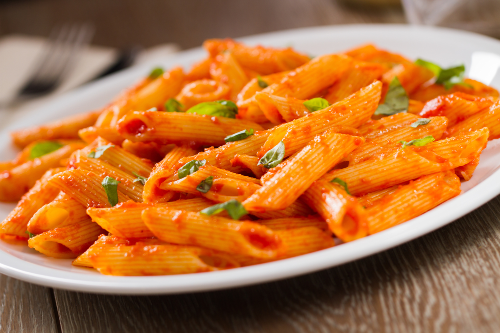

Penne all'arrabbiata

Ingredienti
- Penne rigate 320g
- Pomodori pelati 380g
- Aglio 1 spicchio
- Prezzemolo q.b.
- Olio extravergine d'oliva q.b.
Preparazione
- Preparare la salsa al pomodoro
- Scolare la pasta e saltarla sulla padella
- Versare la salsa sulla pasta saltandola per qualche secondo
- Servire il piatto
Altre ricette italiane !
Pagina iniziale!